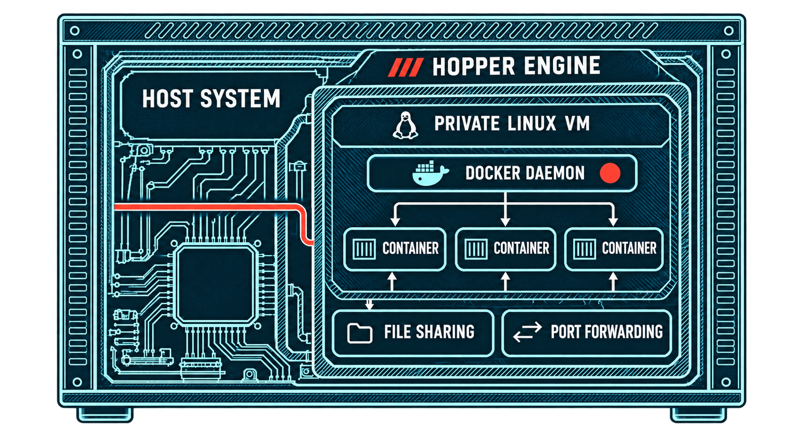

The native container workbench
Hopper Engine
Containers, without
Docker Desktop.
A native desktop app for running
Docker-style containers on
Apple silicon Macs, with
its own managed
Hopper Engine.
Apple silicon Read the docs View source

-
1
Private Linux VM
A managed Linux VM that runs on the host and keeps containers isolated.
-
2
Rootful Docker
A full Docker daemon inside the VM, compatible with CLI, images, and Compose.
-
3
File sharing
Share project files between the host and containers through configured paths.
-
4
Port forwarding
Expose container ports to localhost so apps remain easy to reach.
Fig. 1 Hopper Engine (sectional view)
How it works
-
01Install
Download Hopper for Apple silicon and install the native macOS app.
-
02Import
Use the Docker CLI as usual — pull an image or use your existing Dockerfile and Compose files.
-
03Run
Start your containers with familiar commands (e.g. docker run or docker compose up) and access them on localhost.
System status / operational scope
ReadyOne workbench. Your container world.
The engine is yours.
The workflow stays familiar.
Hopper runs a private, managed Linux engine on macOS, or attaches to the Docker-compatible engine already present. Images, containers, volumes, networks, Compose stacks, logs, terminals, files, and ports remain in one native control surface.
- Managed engine
- Private Linux VM + rootful Docker macOS
- Existing endpoints
- Unix socket, TCP, TLS, or named pipe Any host
- Local runtimes
- Docker and Podman discovery Linux
- Optional backend
- Apple container runtime macOS
Docker Desktop transition / controlled procedure
3 modesChange engines without changing how you work.
Coexist. Import. Replace.
- 01CoexistLowest risk
Install Hopper beside Docker Desktop and attach to its engine. Nothing moves until you choose.
- 02ImportGuided move
Choose any Docker-compatible engine, select its images, networks, and containers, then copy them into Hopper Engine.
- 03ReplaceFull control
Make Hopper Engine the active Docker context. Existing CLI and Compose commands continue to work.
Capability ledger / workspace operations
Native UIThe daily controls, without the browser shell.
A container workbench,
not a tray menu.
Hopper / v0.17.0
Ready when your containers are.
Download the signed macOS build, or start with the field manual and connect Hopper to the engine you already use.